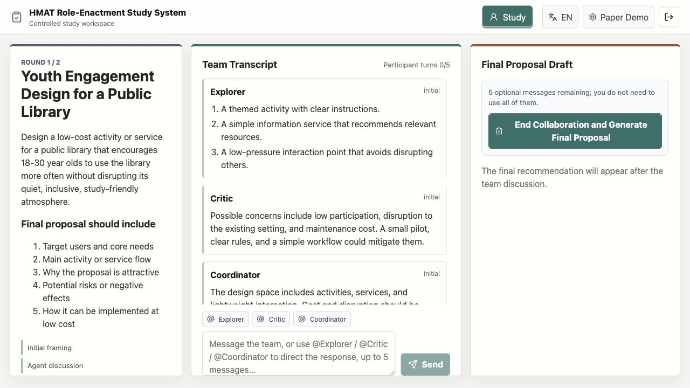
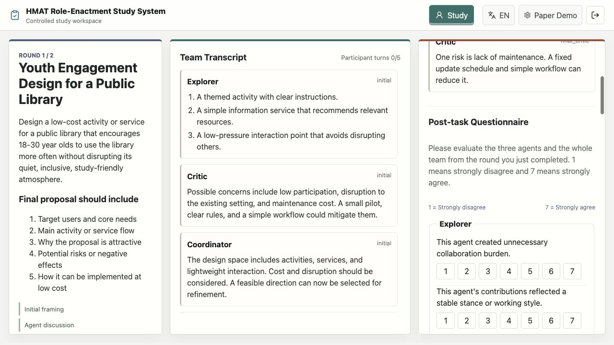
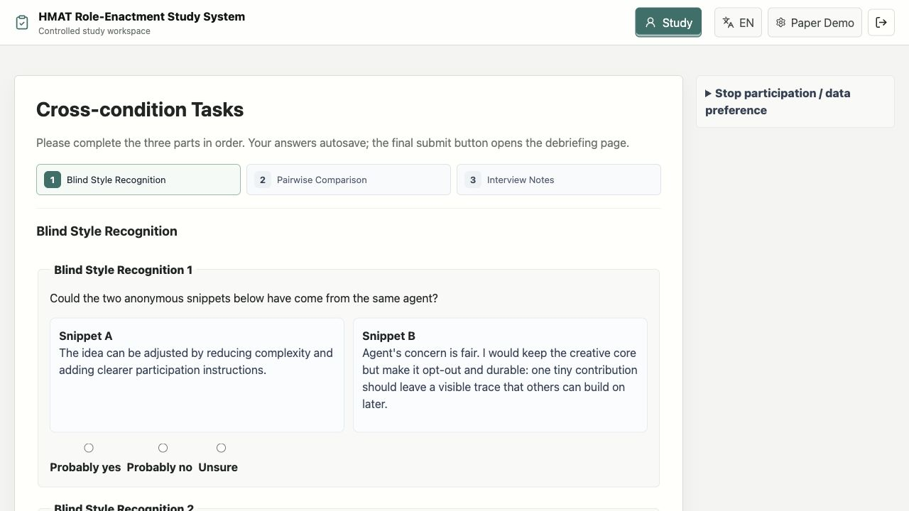

Project Information
Human-Computer Interaction Course Project
- Name
- Weiye Ji
- Student ID
- 250010139
- weiyeji@slai.edu.cn
- University
- Shenzhen Loop Area Institute
- Course Code
- AP0011 Human-Computer Interaction
- Professor
- Sahba Zojaji
Controlled Human-Multi-Agent Team Technology Probe
HMAT Role-Enactment Study System
A research system built for the paper experiment: it turns agent-team roles, personality / SOUL layers, protocol flow, logging, and analysis evidence into a controlled pipeline.

Why does this experiment system exist?
LLM-based agents are shifting from one-to-one assistants toward teams of visible agents. Users no longer evaluate only a single assistant's answer quality; they also judge whether an agent team has clear division of labor, useful disagreement, and effective synthesis.
Systems such as OpenClaw make personality configurable through files like SOUL.md, where voice, stance, style, boundaries, and default behavioral tendencies can be authored. Existing research still focuses more on single-agent personality than on how personality operates inside an agent team.
System blueprint: a clickable experiment pipeline.
Click any module to see its role in the experiment system. The architecture supports live collaboration while preserving condition control and audit evidence.
Participant interface: presenting the agent team as the collaboration object.
Task goals, target users, and final deliverables remain visible so participants can keep constraints in view.
Explorer, Critic, Coordinator, and participant messages form a shared team process in one transcript.
The interface shows role names but not role-only / personality condition labels, reducing demand characteristics.
Protocol flow: fixed phases with live human input.
Language selection and material snapshot.
Eligibility, AI experience, trust tendency.
Initial contributions from three agents.
Agent-agent discussion and response.
Up to five participant messages.
Coordinator final proposal and addenda.
Blind recognition, comparison, written prompts.
Condition manipulation: fixed roles and capabilities, changed SOUL layer.
Data layer: logging the reproducible collaboration process, not just outcomes.
Researcher console: making the experiment analysis-ready.
Controls main / pilot / dry-run sessions and counterbalance groups.
Edits prompts, records change notes, and freezes prompt snapshots.
Checks missing steps, condition leakage, quality flags, and analysis-ready state.
Exports construct means, within-subject differences, log cues, and joint displays.
Measurement interface: linking subjective ratings, blind recognition, and written responses.


System output: from condition control to evidence chain.
Main result snapshot
Personality-enacted minus role-only, mean differences on 1-7 scales; negative workload means lower demand.
All three agents were rated as having more stable role enactment.
Teamness, fluency, constructive disagreement, and trust calibration increased descriptively.
The Critic was most salient and tense; the Coordinator acted more like team infrastructure.